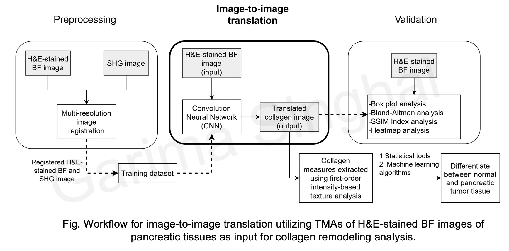
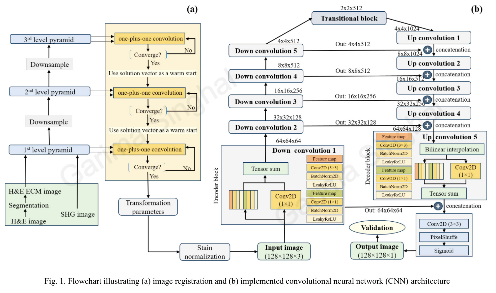
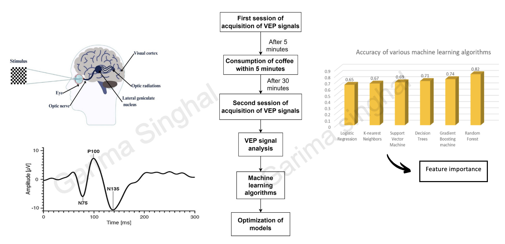
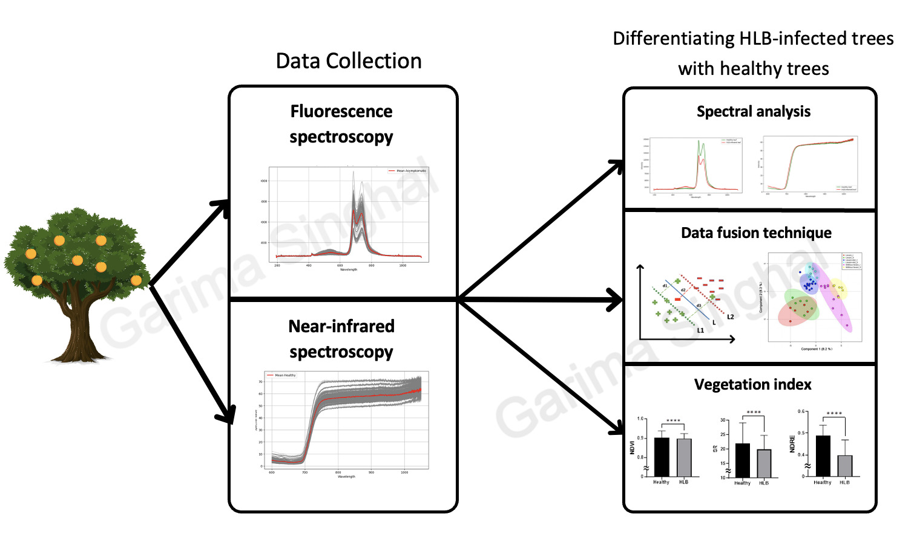

Scholarly Output
Publications &
Conferences

Journal · 2025
A simple machine learning model considering Serum bilirubin, PT-INR and age can accurately predict the risk of renal failure in patients of ACLF
Journal of Clinical and Experimental Hepatology, 2025;15:102726

Conference · 2026
🏆 Best Paper Award
Assessment of collagen morphology in pancreatic tumor using computational translation of histological images
Lecture Notes in Networks and Systems, 2026:297–311

Journal · 2025
First-order Analysis of Stromal Collagen in Chronic Pancreatitis using Cross-Modality Image Translation with Convolutional Neural Networks
Procedia Computer Science, 2025;258:365–373

Conference · 2025
Analyzing the effect of coffee consumption on visual pathway using visual Evoked Potential (VEP) signals and machine learning algorithms
Communications in Computer and Information Science, 2025:267–277

In Prep. · 2024
Early Detection of Citrus Greening Disease via Fusion of Visible and Near-Infrared Spectra with Machine Learning Approaches
Manuscript in preparation
In Progress